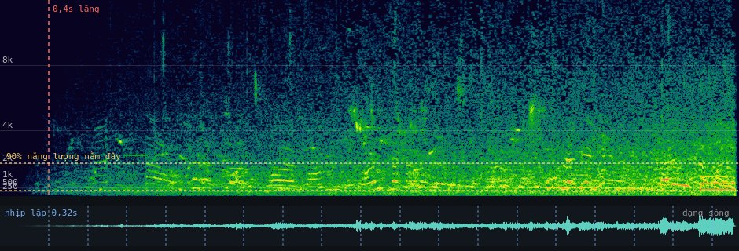

File assets/am/cho.mp3 · 6,06 giây · 96 kbps · 44,1 kHz stereo
Kết luận ngắn
File này không phải nhạc game. Nó là bản ghi thực địa đã bị lọc mất hai đầu tần số — nghe như radio. Có 0,4 giây lặng câm ở đầu và kết thúc đột ngột đang lúc to nhất.

Trên: phổ tần số theo thời gian (sáng = to). Dưới: dạng sóng.
| Chỉ số | Đo được | Nghĩa |
|---|---|---|
| Dải tần chứa 90% năng lượng | 300–2000 Hz | Đúng dải giọng nói qua điện thoại |
| Năng lượng dưới 120 Hz | 0,7% | Không có trầm — thiếu "sức nặng" |
| Năng lượng trên 5 kHz | 0,6% | Không có không khí, không có chi tiết |
| −10 dB tại | 1669 Hz | Cao độ tụt rất sớm |
| Năng lượng dải tiếng nói 300–3400 Hz | 91,9% | Gần như toàn bộ là giọng/tiếng người |
| Độ phẳng phổ | 0,49 | 1,0 = nhiễu trắng; 0,49 = hỗn hợp, không có cao độ rõ |
| Cao độ cơ bản | 78–501 Hz | Trôi liên tục, không đứng yên → không phải nhạc cụ |
| Lặng đầu | 0,4 s | Âm tuyệt đối (−180 dB) |
| Kết thúc | −14 dB | To nhất ở cuối rồi cắt — không fade |
| Tương quan stereo | 0,58–0,91 | Có stereo thật, không phải mono nhân đôi |
1 Không có cao độ ổn định
Tôi dò cao độ mỗi 0,1 giây. Nó nhảy loạn: 165 → 78 → 185 → 424 → 238 → 412 → 277 Hz… Nhạc cụ thì cao độ đứng yên hoặc đi theo giai điệu. Nhảy như vậy là giọng người nói hoặc tiếng ồn.
2 Bị cắt hai đầu tần số
Không có gì dưới 120 Hz, không có gì trên 5 kHz. Đó là dấu hiệu của file đã qua lọc — hoặc do nguồn phát, hoặc do công cụ nén. Bản ghi thật ngoài trời luôn có gió trầm và tiếng lách cách cao.
3 Không lặp lại
Tôi so 17 cặp khối liền nhau: tương quan gần 0. Nghĩa là không có đoạn nào lặp. Đây là một đoạn ghi liên tục, không phải clip ghép vòng. Muốn dùng làm nền game thì phải cắt và nối lại.
Ba thứ cộng lại:
Tai người nhận ra ngay "đây là micro đặt ở đâu đó", chứ không phải "đây là cảnh trong game".
Đổi hẳn thể loại: từ nhạc sang âm thanh môi trường.
Bản trước tôi viết prompt thành nhạc — đàn tranh, phách, ngũ cung, nhịp 96. Sai. Anh chỉ ra rồi, và anh đúng: cảnh trong game cần tiếng của nơi chốn, không phải bài hát.
Bản mới tả đúng thứ file anh tải lên đang có — chỉ khác là đủ dải tần và liền mạch:
Thêm vào CHUNG một câu chống đúng lỗi của file này:
“Full low end below 120 Hz where the scene has weight (wind, room, crowd), and air above 5 kHz so it does not sound band-limited or like a telephone or a radio.”
Và một câu chặn hẳn nhạc: “This is an ambience soundscape, NOT music. No melody, no musical instruments, no chords, no drum beat.”
Vì sao không dùng nhạc nền
Nhạc giai điệu lặp 10 giây thì người chơi nhận ra máy đang lặp sau khoảng ba vòng — tai người bám vào nhịp và giai điệu nên nghe ra ngay chỗ nối. Tiếng môi trường thì lặp mà không lộ, vì không có gì để bám vào. Đây cũng đúng thể loại các thư viện âm thanh gọi là ambience.
| Cảnh | Nhịp | Ơ nhịp | Dài |
|---|---|---|---|
| Chợ sớm | 96 | 4 | 10,00 s |
| Trận chiến | 120 | 5 | 10,00 s |
| Núi | 48 | 2 | 10,00 s |
| Sân tập | 96 | 4 | 10,00 s |
| Vườn thuốc | 72 | 3 | 10,00 s |
| Miếu | 48 | 2 | 10,00 s |
| Đêm | 72 | 3 | 10,00 s |
| Làng | 96 | 4 | 10,00 s |
| Tĩnh | 48 | 2 | 10,00 s |
Cảnh đông nhịp nhanh, cảnh thưa nhịp chậm. Tất cả chia chẵn 10,00 giây nên vòng lặp khít đúng ô nhịp.
Mỗi cảnh giờ có 4 từ khoá tiếng Anh để tìm nguồn
trên thư viện âm thanh. Cảnh chợ sớm: morning market ambience.
Tải file dài bao nhiêu cũng được — hệ thống tự lấy 30 giây đầu khi anh gửi lên.
Nếu công cụ vẫn cho ra file nghe như radio, gửi tôi file mới — tôi đo lại và biết ngay nó thiếu gì. Mỗi lần đo mất khoảng một phút.
Lưu ý: tôi không nghe được âm thanh. Mọi kết luận trên đây là từ số đo — phổ, cao độ, đường bao, tương quan. Số đo chỉ ra rất rõ bản chất file, nhưng không thay được tai anh.